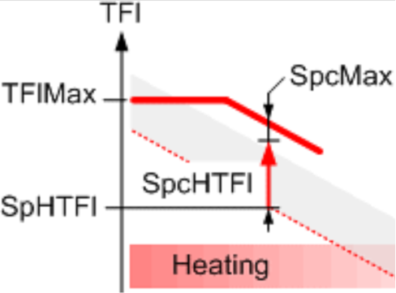
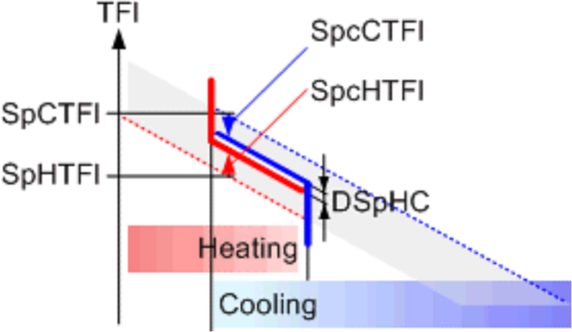
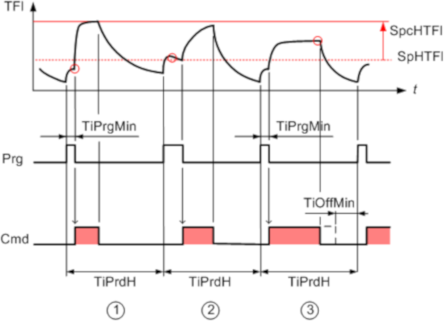

[PWM_CTL] Pulse width modulation control
PWM_CTL allows for cycle operation of recirculating pumps for slow heating and cooling emission systems, e.g. thermo-active systems (TABS). Current heating or cooling demand is determined by purge. Cycle operation lasts 1-24 hours. In a 24-hour cycle operation, the pump switch-on time can be specified for any time of day. Cycles are used to introduce the required heating or cooling energy faster into the heating or cooling emission system but at lower or higher temperatures compared to continuous operation.
Functioning
PWM_CTL calculates the flow temperature setpoint corrections for heating or cooling cycles and controls the circulating pump accordingly. The duration of operation cycles can be set in the range of 1–24 hours. For 24-hour cycles, the pump switch-on time can be specified in the block configuration.
PWM_CTL provides the present operating mode [PrOpMod], calculated setpoint corrections [SpcHTFl] and [SpcCTFl], and the values for command [Cmd] and purge [Prg].
Present operating mode [PrOpMod]
[PrOpMod] is calculated at the start of every cycle based on the values at the inputs [EnH] and [EnC]. If [EnH] and [EnC] change during an ongoing cycle, their new values are considered at the beginning of the next cycle.
[EnH] (heating) | [EnC] (cooling) | [PrOpMod] | |
|---|---|---|---|
Yes | No | Heating (heating cycles) | |
Yes | Yes | Heating/cooling (heating/cooling cycles) | |
No | Yes | Cooling (cooling cycles) | |
No | No | Off (no cycles) | |

If [EnH] or [EnC] change during a cycle, the change is considered in the next cycle.
Calculating setpoint corrections
PWM_CTL calculates corrections for the given flow temperature setpoints [SpHTFl] and [SpcTFl]. With the higher or lower flow temperature, heating or cooling energy is introduced faster into the heating or cooling system.
PWM_CTL does not supply new flow temperature setpoints, only setpoint corrections [SpcHTFl] and [SpcCTFl].

The calculation of the setpoint corrections is done based on [PrOpMod].
[PrOpMod] = Heating
In the heating operation, energy is supplied with a higher flow temperature setpoint. The correction for the heating setpoint is provided at the output [SpcHTFl].
The setpoint correction is limited by:
[SpcHTFl] <= [SpcMax]
[SpcHTFl] <= [TFlMax] - [SpHTFl]

TFlMax | Maximum flow temperature | SpHTFl | Flow temperature setpoint for heating |
SpcMax | Maximum setpoint correction | SpcHTFl | Setpoint correction for heating |
[PrOpMod] = Heating/Cooling
In the heating/cooling operation it is not defined whether energy must be supplied or discharged. In such cases, the given flow temperature setpoint range [SpHTFl]...[SpcTFl] is narrowed down to [DSpHC] (neutral zone). The corrections for heating and cooling setpoints are provided at outputs [SpcHTFl] and [SpcCTFl].

SpcTFl | Flow temperature setpoint for cooling | SpHTFl | Flow temperature setpoint for heating |
DSpHC | Delta flow setp. heat/cool. (neutral zone) | SpcCTFl | Setpoint correction for cooling |
SpcHTFl | Setpoint correction for heating |
[PrOpMod] = Cooling
In the cooling operation, energy is discharged by a lower flow temperature setpoint. The correction for cooling setpoint is provided at [SpcCTFl] output.
Setpoint correction is limited by:
[SpcCTFl] <= [SpcMax]
[SpcCTFl] <= [SpcCTFl] - [TFlMin]

SpcTFl | Flow temperature setpoint for cooling | TFlMin | Minimum flow temperature |
SpcMax | Maximum setpoint correction | SpcCTFl | Setpoint correction for cooling |
[PrOpMod] = Off
No operation: PWM_CTL neither controls nor enables the recirculating pump ([Cmd] = 0 and [Prg] = 0).
[PrOpMod] = Transient
Disabled functionality: Calculation is not performed because function block is disabled or measurement for flow temperature is reported as not valid or PWM configuration for the corresponding operating mode is not provided ([Cmd] = 1 and [Prg] = 0).
Operation steps
Within a given operating mode, the function block performs the control in cycles. Each cycle contains the following steps.
1 | The cycle begins with purge (heating and cooling valves closed). No purge if [TiPrgMin] = 0 | |
2 | After minimum purge [TiPrgMin], the flow temperature [TFl] is analyzed. Based on the flow temperature value, one of the following actions is performed:
| |
[TFl] < [SpHTFl] | If [TFl] is outside [SpHTFl] and [SpcTFl] (outside flow temperature setpoint band during continuous operation), purge is stopped and heating or cooling is enabled (example 1). | |
[TFl] < [SpHTFl] | If [TFl] is between [SpHTFl] and [SpcTFl] (within the flow temperature setpoint band during continuous operation), purge is extended until heating or cooling is requested (example 2), or until purge is completed (simple purge phase). | |
Special case | Heating/cooling: | |
3 | Setpoint corrections are provided at the outputs of PWM_CTL for the duration of relative switch-on time [TiOnEst]. If during this time the switch-off criterion is not met, the switch-on phase continues (example 3). If the switch-off criterion is met, the switch-on phase is completed, and no further changes are made until the end of the cycle. | |
Special cases | If the minimum switch-off time of the recirculating pump [TiOffMin] cannot guarantee the required heating, heating continues throughout the entire cycle. The same applies to cooling. | |
If the minimum switch-off time [TiOffMin] cannot be guaranteed within the operational cycle, the switch-on phase is continued until the end of the cycle. If the calculated setpoint correction results in a switch-on time below the minimum switch-on time for the recirculating pump [TiOnMin], the minimum switch-on time is used as switch-on time, but with reduced setpoint correction. | ||
Example for heating cycles

Example 1
The time period [TiPrdH] always starts with purge [Prg]. After expiration of the minimum purge time [TiPrgMin], a flow temperature [TFl] is measured below that for heating in continuous mode [SpHTFl]. Heating [Cmd] with setpoint correction [SpcHTFl] begins. Heating ends when the switch-off criteria of PWM_CTL is met. There is no change until the next period.
Example 2
The time period [TiPrdH] always starts with purge [Prg]. After expiration of the minimum purge time [TiPrgMin], a flow temperature [TFl] is measured over that for heating in continuous mode [SpHTFl]. Purge is extended until the flow temperature is below [SpHTFl]. Heating [Cmd] with setpoint correction [SpcHTFl] begins. Heating ends when the switch-off criteria of PWM_CTL are met. There is no change until the next period.
Example 3
The time period [TiPrdH] always starts with purge [Prg]. After expiration of the minimum purge time [TiPrgMin], a flow temperature [TFl] is measured below that for heating in continuous mode [SpHTFl]. Heating [Cmd] with setpoint correction [SpcHTFl] begins. During heating, the flow temperature for heating at cycle [SpHTFl] + [SpcHTFl] is not reached. Heating is extended until the switch-off criterion of the function is met. There is no change until the next period.
Pins
Input | Description | Data type | Default value |
|---|---|---|---|
|
SpHTFl | Flow temperature setpoint for heating Setpoint for flow temperature for heating (continuous operation) | Real | 20 [°C] 0.0…130.0 [°C] |
|
SpCTFl | Flow temperature setpoint for cooling Setpoint for flow temperature for cooling (continuous operation) | Real | 20 [°C] 0.0…130.0 [°C] |
SpRH | Room setpoint for heating | Real | 22.0 [°C] 5.0...40.0 [°C] |
SpRC | Room setpoint for cooling | Real | 26 [°C] 5.0...40.0 [°C] |
|
EnH | Enable heating A change is considered after present operating cycle is completed. | Boolean | 1 |
0 - Heating is disabled. | |||
|
EnC | Enable cooling A change is considered after present operating cycle is completed. | Boolean | 1 |
0 - Cooling is disabled. | |||
|
TFl | Flow temperature The function block requires [TFl] to calculate the present heating or cooling energy transfer and to delay switch-on phase if it is not needed. | Real | 20.0 [°C] 0.0...130.0 [°C] |
|
ErTFl | Enable function Indicates if flow temperature is faulty. | Boolean | 0 |
0 – Flow temperature is not faulty. | |||
TFlMax | Maximum flow temperature The maximum flow temperature limits the setpoint correction [SpcHTFl] to avoid exceeding the maximum flow temperature for heating. [SpHTFl] + [SpcHTFl] <= [TFlMax]. | Real | 95.0 [°C] 0.0...130.0 [°C] [°C] |
TFlMin | Minimum flow temperature The minimum flow temperature limits the setpoint correction [SpcCTFl] to avoid dropping below the minimum flow temperature for cooling. [SpcTFl] - [SpcCTFl] >= [TFlMin]. | Real | 0.0 [°C] 0.0...130.0 [°C] |
|
TiPrdH | Time period for heating Determines the cycle length for heating. | Time | 4h 0...24h |
|
TiPrdC | Time period for cooling Determines the cycle length for cooling. | Time | 4h 0...24h |
|
TiPrdHC | Time period for heating or cooling Determines the cycle length for heating or cooling. | Time | 4h 0...24h |
|
TiPrgMin | Minimum purge time Minimum purging switch-on time of the pump to be able to measure a reliable flow temperature value [TFl]. | Time | 30m |
|
TiOnMin | Minimum switch-on time Minimum switch-on time of the pump in a heating or cooling cycle. | Time | 1m |
|
TiOffMin | Min.switch-off time Minimum switch-off time of the pump in a heating or cooling cycle. If the minimum switch-off time cannot be guaranteed, present operation continues | Time | 0s |
|
SpcMax | Maximum flow temperature setpoint correction Maximum setpoint correction for the flow temperature during heating or cooling cycles | Real | 1.5 [K] 0.0...10.0 [K] |
DSpHC | Delta flow temperature setpoint for heating or cooling operation Neutral zone for heating/cooling. When both heating and cooling are enabled, the block calculates one setpoint for the flow temperature for heating and one for cooling. The two setpoints must adhere to the minimum temperature difference. This avoids swinging between heating and cooling. | Real | 0.1 [K] 0.0...10.0 [K] |
|
RthRatio | Thermal resistance ratio Value for thermal resistance ratio between the thermal resistance for flow to heat buffer supply system and the thermal resistance flow to room. | Real | 40.0 [%] |
|
Prd24Mod | Mode for 24 hours period Prerequisite: [TiPrdH] or [TiPrdC] or [TiPrdHC] = 24h. | Boolean | 1 |
0 – Activates the day time [CntrTiOn] as time median for the daily cycle. 1 – Activates the day time [SttTiOn] as start value for the daily cycle. | |||
|
SttTiOn | Start switch-on time Defines the start time for the daily cycle. | Time | 22h_00m |
|
CntrTiOn | Center switch-on time Daytime as median for the daily cycle. | Time | 04h_00m 00h_00m…24h_00m |
Output | Description | Data type | Default value |
|---|---|---|---|
|
PrOpMod | Present operating mode | Integer | 2: Off 1...5 |
1: Transient | |||
|
Cmd | Command | Boolean | 1 |
0 - Heating / cooling is not allowed. | |||
|
Prg | Purge | Boolean | 0 |
0 - Purge function is not allowed. | |||
|
SpcHTFl | Setpoint correction flow temperature for heating | Real | 0.0 [K] |
|
SpcCTFl | Setpoint correction flow temperature for cooling | Real | 0.0 [K] |
|
SpCTFl | Flow temperature setpoint for cooling Setpoint for flow temperature for cooling (continuous operation) | Real | 20 [°C] 0.0…130.0 [°C] |
|
TiOnEst | Estimated relative switch-on time Calculated switch-on time for the recirculating pump [Cmd] in % of the cycle time. The value applies to the current settings and for the assumption that [TFl] corresponds exactly to the setpoint ([SpHTFl] + [SpcHTFl] or [SpCTFl] - [SpcCTFl]) during the entire switch-on phase. The value is for information on present operation only. | Real | 0.0 [%] |
|
ErrCode | Error code indication | Integer | 0: No error |
= 0 - No error | |||
|
EnFnct | Enable function Enables the function. | Boolean | 1 |
0 - The function is disabled. | |||
|
SysUnits | System of units Indicates the system of units used by the block. | Integer | 1: International system of units (SI) (fallback) 1...5 |
1: International system of units (SI) (fallback) | |||
Application
Time period configuration
Value 0 for time period configuration ([TiPrdH], [TiPrdC], [TiPrdHC]) can be used to disable the corresponding operating mode. If [EnH] and [EnC] request such disabled operating mode, PWM_CTL sets the outputs with the following values:
- [PrOpMod] = Transient
- [Cmd] = 1
- [Prg] = 0
- [SpcHTFl] = 0.0
- [SpcCTFl] = 0.0
- [TiOnEst] = 0.0
Time period configurations greater than 0 are limited in the range: 1h...24h.
When a time period is configured with value 24h, values at inputs [Prd24Mod], [SttTiOn], [CntrTiOn] can be used to configure the starting time (as time of day) for the corresponding cycle.
Thermal resistance ratio [RthRatio]
[RthRatio] denotes the ratio between two thermal resistances:
- Thermal resistance from flow media to heat buffer of heat emission or absorption system
- Thermal resistance of flow media to room air
For integrated TABS (concrete core activation), the following parameters are decisive:
- Pipe configuration (pipe distance TABS register)
- Water volume flow in the pipes of the TABS registers
- Structure of floor and ceiling construction
The following resistance ratios apply to concrete core activation:
Pipe distance | Water volume flow | Floor: carpet, | Floor: carpet, | Floor: underfloor space of elevated floors, |
|---|---|---|---|---|
15 cm | High: 15 kg/(m2 h) | 30 | 26 | 21 |
Median: 12 kg/(m2 h) | 33 | 29 | 24 | |
Low: 7.5 kg/(m2 h) | 41 | 36 | 30 | |
20 cm | High: 15 kg/(m2 h) | 40 | 35 | 29 |
12 kg/(m2 h) | 42 | 37 | 31 | |
Low: 7.5 kg/(m2 h) | 48 | 43 | 36 | |
25 cm | High: 15 kg/(m2 h) | 48 | 43 | 36 |
12 kg/(m2 h) | 50 | 44 | 38 | |
Low: 7.5 kg/(m2 h) | 54 | 49 | 42 |
Lower resistance ratios, e.g., [RthRatio] < 35%, generally result in shorter switch-on phases in cycles, high resistance ratios in longer switch-on phases.
Example
A narrow pipe configuration (15 cm) and a high water volume flow (15 kg/(m2 h)) have lower thermal resistance to the heat emission. A carpet and a blank ceiling tend to have less thermal resistance. Together, this results in [RthRatio] = 30%.
Maximum setpoint correction [SpcMax]
In heating or cooling cycles, [SpcMax] strongly influences the cycle ratio [TiOnEst]. [SpcMax] on the one hand must be as low as possible to avoid great differences of the flow temperature setpoint between cycle and continuous operation. On the other hand, [SpcMax] must be selected as high as possible to achieve short switch-on times of the recirculating pump. For TABS, guide values are between 1 and 3 K.
Special case
A very high [SpcMax] may be selected, e.g., 10 K, for cooling using only cooling tower operation, to take full advantage of maximum cooling potential (up to and including [TFlMin]).
Delta flow setpoint heating/cooling
In heating or cooling cycles, the flow temperature setpoint band [DSpHC] (neutral zone for heating/cooling) must be as small as possible to achieve short switch-on times. However, [DSpHC] must not be too small to avoid unnecessary changeover between heating and cooling. For TABS, guide values are between 0.1 and 1.0 K.
Minimum purge time
The minimum purge time is selected according to the water circulation period, e.g., longer than a complete water cycle.